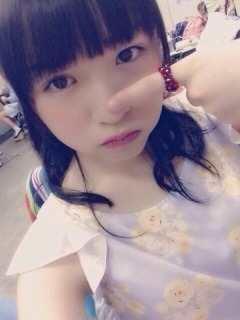
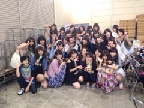
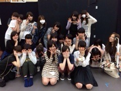
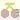

2014/0522Thu好物は人の心
またせたなっ！
10000000000000年前のある日。
1匹の小悪魔よりの悪魔が、
毎日自慢のツノと牙をピカピカに
磨いていました。
鋭いツノとぴかぴかの牙を自慢に
している悪魔の名は
ひなデビル。。。
今まで人前に姿を見せていなかった
ひなデビルが、
ある日北野日奈子のかわりに
握手会のレーンに現れた。
りゃーーーーーーーーんっ
が、しかし
ひなデビルを見てきてくれた皆さんに
あ～牛だー！とか
ゴキブリさんこんにちわ！とか
ひなデビルのことをとことんいじった！
そんなひなデビルは、ついに怒ってしまった！
ぷんぷん！まったくもー！ぷんぷん
みたいな怒り方ではなく、
びびびぬああああ！
つぅいんつぅいん！ジリジリ
がうがおがぶ！
と、怒った！
ほっぺたぷくーーー
なにっ！こんな怒り方じゃ甘いだと？！
それなもうツノの先から湯気がでるほど
怒ってやるんだからなっ！！！
みてろよーーーっ！
どうだ！まいったかー！
まだ、怒りはおさまらない!
よーしこうなったら、
可愛い女の子をいたずらしてやるー！

(渡辺みり愛たん)
よーしっ！隙を見て後ろに回り込めた！
だめだ！こんなんじゃ
いたずらができない！
もっともっと近くによらなければ！
よし！いいことを思いついた！
ダンスが好きな女の子だから
音楽をかけておけば
踊り出して呪文にかかるはずだ！
よーし！案の定踊り出した！
今のうちに近寄るぞ！
りゃーーーーーんっ
よし！やった！
噛み付いてやる～！！！
とぅるるるるるるるる
うああああああ
なにっ！
北野日奈子の必殺技
がおーを
やり出したぞ！
がおー、ひなデビルに
1番やってはいけない必殺技！
ひなデビルはいたずらを
しにいったものの、
女の子にやられてしまい
悔しくてすねてしまった。

拗ねて拗ねて
なかなかご機嫌を取り戻せなかった
ひなデビルだったが.....
.............
............？
？？？
？！
！！！！！！！
いつのまにか、自慢のツノを磨き出して
やる気がまたでてきたみたいだ！
よし！いたずらしにいくぞー！
そのいたずらしに行く相手は
いま、これをみている
そこのあなただーーーーーー！
(いつかまた、握手会のレーンに
ひなデビルが姿を現すその時まで
忘れないで待っててね♡)
2014/0522Thuピクルス
みなさまこんばんわ！
ブログ遅くなりました。
前回のブログのたくさんのコメント
ありがとうございました！
全部全部何度も読み返して
勇気や元気や癒しをもらえました！
本当にみなさんには助けられて支えられっぱなしです。
いつか、みなさんに恩返しができるようにこれからもひたむきに精一杯がんばります！

新制服！公式は青のリボンの方だよ！
この間の琴子様のブログの1番始めの
がおがおーって日奈子に向けての
秘密のメッセージなんだって♡
(ちなみにうそだよ♡)

土曜、日曜と名古屋で全国握手会個別握手会がありました！
まずはじめに、個別握手会！
握手会では、たくさんの方が
私のために会いに来てくださいます♡
握手会は私にとって
楽しくて幸せな時間です！
でも、やっぱり周りの人との差は気にしてしまいます。
今のままじゃ、全然ダメです
私だけが楽しい握手会になってしまっている気がするの！
もっとたくさんの方に会いに来て欲しい！って思います
だから、自分を改めて見つめ直して
皆さんが楽しくて幸せな時間になるようにもっと色々考えたいと思います！
次の個別握手会は来月の横浜ですね！
その時には少しでもパワーアップ
しているように色々考えて
楽しいレーンになるように
がんばります♡
髪の毛を切って短くアレンジができないというのも理由なんだけど、
せっかく髪の毛を切ったから
地方の方はなかなか東京近辺に
出て来られないと思って
ショートボブにしてからの初めての地方での握手会ということで
1部～3部はストレートにしました！
アレンジやいつもと違う髪型を見たかった！って方はごめんなさい(；д；)
1部は中学生の時に買った洋服を着ました♪
中に着ているピンクのトップスが
細かい花柄のデザインで可愛いんだよ！

(ちなみにこれの丈が短くて
緑色バージョンも持ってます！笑)
2部はお母さんとお買い物行った時に選んでくれた紺色のギンガムチェックのワンピース！
ワンピースだけじゃ物足りなく
黄色のカーディガンを着ました！
本当は監督さんみたいに肩にかけて
巻こうかとも思ったんだけど、
肌寒かった(；д；)

3部は握手会で始めて着たパステルカラーの紫色♡
白いキャロットスカートに
首にチョーカーもつけたよ！
チップの首輪借りてきたの？
とか
え？飼われたいの？笑
とか
またまたなんでも、いじってくるんだからーーーー！(｀・Д・´)
お洒落なんだよ！チョーカーは！
まったくもー(ノ_・。)！！！

8thシングル最後の全国握手会ということで、いつもとちょっと違う緊張感で
アラームがなる前に起きちゃいました！笑
感じたことがたくさんあって、
どう伝えたらいいか分からないけど、
思ったことをかきます！
ステージに上がると、笑顔を忘れてしまうことが多々ありました。
楽しんでもらえるようなパフォーマンスをしなくてはいけないのに、できていなかったり、ステージから見える皆さんの声援や熱気に気づくこともできていませんでした。
でも、8枚目最後の全国握手会で
ステージに立って片想いが流れた瞬間
目頭があつくなって涙がでてきました
これで、気づいたら片想いを全国握手会のステージで披露するのは一生のうちで最後なんだとか、8枚目の選抜メンバーとしてパフォーマンスをするのは最後って思うと、色々な感情がでてきて
皆さんが私たちに向けて下さるサイリウムの輝きも会場の空気も、すごく綺麗で一体化していて、
私が今まで見られていなかったステージからの景色は、こんなに素晴らしかったんだ改めて実感しました。
人の何倍も何十倍も歌とダンスの練習をして、いつか見せたい!と思っている
キレキレのダンスを9枚目のステージではできるように、頑張る！！！
9枚目のアンダー曲が、とってもかっこいいんだ♪
昨日はまいちゅんとずっといちゃいちゃしてた♡日奈子がいると楽しいでしょー？♡ってニヤニヤしながら言ったら
楽しいよー！ってぎゅーってしてくれた♡
まいちゅんお姉ちゃんなのに、おちゃめで可愛い(｡・・｡)
まいちゅんをいじめる。
遅くなってしまったけど、
玲香さん、らりんさん、れなち
お誕生日おめでとうございます♡

玲香さん♡

らりんさん♡
(日奈子は写ってないよ！)

れなち♡
皆さんのお誕生日画像は作ってる途中なので待っていてください♡！
明日はついにあの、ひなデビルが
いたずらしに来るぞ～！！
りゃーーーーーーーーんっ
2014/0514Wed天真爛漫
みなさまこんばんわっ!
ブログを書くの遅くなってしまいごめんなさい(ノ_・。)
一昨日放送された乃木坂ってどこ？
で、9枚目の選抜メンバーが発表されました。
9枚目のシングルを私はアンダーメンバーとして活動して行くことになりました。
去年の12月の終わり頃に、
二期生の中での私の居場所が
やっと見つかってきて
自分のいいところも悪いところも
見えてきていました。
そんな時期に8枚目の選抜発表があって、自分は名前を呼ばれないと思っていました。
でも、選抜メンバーに選んでもらえて、
嬉しい気持ちもたくさんありましたが
それ以上に選抜メンバーということに不安や恐怖心がありました。
1人1人個性やキラキラした色があって魅力的な先輩方の中に入ってみると、圧倒されてしまい自分の色や良いところが分からなくなったり、何もできない自分がどんどん見えてきて毎日毎日すごく落ち込みました。
選抜メンバーとしてのお仕事で、テレビ収録の機会が増えたり雑誌のお仕事をさせてもらったり、いろいろな事をさせてもらえてとても楽しかったです！
お仕事を100%楽しめて自分の成長につなげるのがアイドルとして本当の姿だと私は思います。
でも、正直なことを言うと
私は100%楽しむことができていませんでした。楽しい事もたくさんあったけど、苦痛に感じてしまう時もあってテレビの中にいる自分が自分じゃなくて嫌いだった時もあります。
私の活動を1番近くで支えてくれている家族にも家に帰ってくると八つ当たりしてしまったり、朝早い時間でも送ってくれたり迎えにきてくれたり私が活動をしやすいように、サポートしてくれる両親に行ってきます！も、ただいま！も言わずに、「ありがとう」という言葉も素直に言えずに話しをしてくれても無視をしてしまったり、本当にたくさん振り回してしまいました。
テレビの中にいる私を見て、家族はきっと色々な気持ちになったと思います。
私が弱くなっている時に優しい言葉をかけたり寄り添ってしまうと、その弱くなった気持ちからどんどん下がってしまい上がってこれなくなってしまうのを
知っている家族だから
どんな言葉を私にかけたらいいのか
わからなく悩ませてしまいました。
でも、家族やメンバーやスタッフさんそしてファンのみなさんに支えられて、1度自分の気持ちに素直になり大泣きした日から、
息苦しかった気持ちから少しずつ
胸のつかえが取れていきました。
次第にテレビ収録やイベントなどを笑顔で楽しむ事ができ、
お！きいちゃん笑えてる！とか
やっぱり笑顔じゃないと日奈子じゃないね！なんて言ってもらえて
少しずつ自信がついていきました！
こんなことを言ったら本当はダメだと思うのですが
9枚目の選抜発表後、精一杯で余裕のなかった重たい心が一気に軽くなって、なんだか晴れ晴れした気持ちになりました。
選抜から落ちて悔しくないわけじゃないし、もっと選抜メンバーの期間にできたことはいっぱいあるって反省もたくさんあります。
それに、選抜メンバーに選ばれて私以上に喜んでくれた皆さんのきもちを考えると、今回落ちてしまったことでごめんなさい。という気持ちがたくさんです。
二期生メンバーにはまだ言えてないけど
未央奈の7枚目での頑張りで8枚目で私につなげてくれたのに、私は結果を残せられなくて9枚目で他の二期生につなげられなかったのが、悔しいです。たくさん支えてくれたのにごめんね。
9枚目は初めてのアンダーメンバーとして、活動していくので
私らしく皆さんが好きな私でいられるように、もっともっと活動を楽しんでいきたいです！
今年の夏でぐーーーーんっと成長して
また選抜メンバーに返り咲けるように努力を忘れず成長できるように頑張ります！！！
二期メンバーにダンスが幼稚園児とか、声がカエルみたい！とか、初期からいじられて褒めてもらえるかなー？と思ってやった事も、はいはい。って流されてしまい褒めてくれる事なんて滅多にないけど、そんな皆でも唯一褒めてくれる所があって、それは私の笑顔です！
長所なんだろうな～なんて言ってると、笑顔でしょ！って鋭くツッコんでくれたり、日奈子は笑ってればなんでも許せるよね～とか、言ってくれます！
皆さんも、私が笑ってるのを見ることがきっと1番安心すると思うし、
お！きいちゃん！それでこそきいちゃん！って思ってくれると思います！
だから、9枚目では皆さんが褒めてくれる私の笑顔の輪が広がっていくように
いつでも笑顔で笑っていようと思います！
にこにこ笑顔より、にたにた笑顔だよね！ってよく言われるけど、
それも他の人にはない私の良いところだと思うし昔からの天真爛漫な所を
この夏のシングルで暴走させてやるんだから～！！！！
明日からまた頑張るぞ！
いろいろなことに不器用で同期の二期生の中でも、坂の1番下から登り始めた私ですが
これからも皆さんが私のそばに
居てくれたら嬉しいです！
皆さんが見てくれている私の夢を
叶えられように頑張ります！
これからも応援宜しくお願いします！
そして遅くなってしまいましたが、
昨年の5月4日のプリンシパル夜公演で
初めてみなさんの前に立たせてもらってから早いことに1年が経ちました！
たんたんと過ぎて行く何もない毎日に、何か刺激がほしい！変わりたい！と思い
友達に勧められたオーディションを母に一度は反対されたけど、勝手に応募して
あっという間に最終オーディションまで行って、初めて秋元先生を見た時に
乃木坂46に入りたい！とその時初めて強く思いました。
最終オーディションまでは、アイドルがどんなものなのかとか、分からなかったから漠然としたアイドル像があって
とてもじゃないけどそんな人にはなれないだろうと、思ってました。
皆さんの前で、雑誌を破って意気込みを叫んだあの日から少しは成長できているのかな？
私自身、成長したかしてないかは、よく分からないし
なんてったって成長スピードが
他の人より3倍ぐらい遅いから
皆さんも私の成長がいまいちわからないよね(ノ_・。)笑
成長を見てもらえるには
プリンシパルだと思います！
だから、1年前は無色だった私の色が
1年後の同じ舞台で何色に光ってるのか
見てもらえるように、
精一杯がんばります！！！
2014/0511Sunソーダ味とバニラ味
みなさまこんばんわ！
ブログ遅くなりました(°_°)！
未央奈のイヤリングのさくらんぼを狙う
より目ができなくて怖い顔に
なってしまった伊藤純奈と
より目が得意でさくらんぼを
勢いよく狙ってるのに困る
北野日奈子
7日の夜に、ひなデビルのブログを
書いていたら突然画面が真っ赤になり
電源が落ちてそのあと携帯が起動しなくなってしまい、壊れていました(´･_･`)
8日の夜に新しいのに変えたのですが、
データが全部消えてしまい
携帯が1からのスタートで
ヘコんでました。。。
ひなデビルの画像ももちろん
今までの画像や動画やいろんな物が
全て消えちゃったよー。。。
本当に悲しいーっ
でも、ひなデビルのブログを書く約束はちゃんと守るよ！！！
またお家でデビルになって、写真とる！
だから、次の次の次くらいのブログぐらいに書くね！！！
本当に待たせてしまいごめんなさい。。
今日は質問をかえします！！！
きいちゃんにきいちゃおう
 きぃちゃん、髪の毛切ってメイクも変えた？
きぃちゃん、髪の毛切ってメイクも変えた？→髪の毛切って軽くしたらなんだか、普段のメイクが濃く見えちゃうようになったから、アイメイク薄くしたんだよー！
気づいてくれてありがとう(｡・・｡)
デビルだから、トマトジュース？あれ？
でも、トマトジュースは吸血鬼だったか...
次回のコスプレは、バンパイアで決定だね
でも、トマトジュースは吸血鬼だったか...
次回のコスプレは、バンパイアで決定だね
→デビルだからトマトジュースだと思って書いたらトマトジュースは吸血鬼だっ！！！
バンパイア('∀`)かっくいい♡
きいちゃんの好きなキャラクターはなに？→最近はね、またケアベアが好きになったの♪他にはパワーパフガールズも好きだし、アマールカとかcocoちゃん系のもすき♡
ディズニーでは、ティンカーベル、マリーちゃん、ティガーすき♡
サンリオならね、シナモロールが1番♡
ひなデビルに僕も会いに行きたかったな～(>_<)/~~またどこかでやってね
次はひなエンジェルもやっちゃおう(笑)
→エンジェル！！！天使になんてなれないよ～(´･_･`)絶対に合わないとおもう(´･_･`)
悪魔の次は天使もやるの？ てか天使ってなかなかないか！笑→天使！！！やってみたいけど、似合わないとおもう(´･_･`)！
マジすかの時のあっちゃんは多分黒系のセーラーだったよね？それもきてみよう(｡-_-｡)
→そーだった！黒系のセーラー服だった！今度黒系のセーラー服も着たいな♪
お気に入りの、トマトジュースは何ですか？キャロットジュースも美味しいよね！→実はトマトジュース飲めません。
デビルを着てたから、デビルになりきるために、好物を書いたらトマトジュースが好物なのはバンパイアだったーー！
トマトジュースは無塩派？それとも有塩派？
それとも野菜ジュース派？
それとも野菜ジュース派？
→トマトジュースを100%では飲めないけど、野菜ジュースにトマトも実は入ってます！っていうのは飲めます！だから、野菜ジュース派！！！
きいちゃん髪黒くしました？→そうなの！黒くしたよ！
髪の毛染めてもすぐ色が抜けちゃって明るくなっちゃうから、もう地毛ぐらいの黒にしたの！！！
日に当てるともう茶色いよ(´･_･`)
きいちゃんってロングの時ってあったの？→ありましたよ！高校1年生の夏まで未央奈で言うブラックロングロングヘアーだったんだ♪
小学校とか中1の時はボブとかミディアムの時もあったけど、ずーっと伸ばしてたの！
好きな色はなんですか？→好きな色か～！ピンクと黄色と黄緑と、白と赤とメロンソーダ色といちごみるく色！！！
きいちゃんはメガネ買うとしたら何色が好き？→初代メガネちゃんは赤とオレンジっぽい色が二色入ってるメガネで、
二代目が青で、三代目が紺と黒を一緒に買ったよ♪よく使ってるのは紺！！！
いまほしい色はーっ、緑！！！
牛さんよく似合ってる（笑）→牛さんじゃない！牛さんじゃないよーっ！
デ！ビ！ル！だよ！
ひなデビルだもーん(´･_･`)♡
デビルいいやーん(^w^)ツノゴキブリだね(笑)
→ツノゴキブリじゃない！ツノゴキブリじゃないよーっ！
デ！ビ！ル！だよ！
ひなデビルだもーん(´･_･`)♡
(2回目)
ひなデビルも好評...って事でOKですか？(￣▽￣;)→好評ってことで逆にいいですかね？(｡-∀-｡)笑
私は自分でデビル気に入ってます♡
りゃーーーんって...なんですか(｡-_-｡)笑
→りゃーーーんはりゃーーーんだよ！
りゃーーーーーーーーーんっ！！！
(ひなデビルが現れた時の音)
きいちゃんデビルはデビルなのにガオーやるの？それともなんか違うことするの？
→デビルでもがおーってやるよ！
もちろん違うこともするよっ！
なんでも、おっしゃってください♪
きぃちゃんは握手会でどんなこと話すのがすきですか？？→うーん！なんでも楽しいですよ！どんな内容でも、わくわくしながら握手会してるから楽しい♪チップの話題とかMr.Childrenさんの話とか、結構します♪
今食べたい物とかどこに行きたいとかそんな話もよくするよ(ノ_・。)♡
今日のきいちゃんにきいちゃおう！は
ここまでだーーいっ！
またすぐにやるから、質問とかなんでもコメントしてください(｡-_-｡)♡
きいちゃんがきいちゃおう
みなさんの好きな今季のドラマはなんですかー？
私はねーっあれとあれとあれとあれとあれ！笑
皆さんが教えてくれたら私もいいます(´ー｀)笑
それではおやすみなさい♡
またあしたブログ書きますっ

車の中で撮ったから、ぶれぶれだーー
2014/0507Wed好物はトマトジュース
みなさまこんばんわ(*˘︶˘*)！
昨日は個別握手会ありがとうございました！！
足元の悪いなか、わざわざ会いに来てくださり本当に嬉しかったです♡
昨日の握手会は新しく来てくださった方もちらほらとたくさん来てくださり、
これまた始めて来たのに
セーラー服だったりデビルだったり
話しづらい環境にしてしまい
すみません(｡ŏ_ŏ)
1部のお洋服はワンピース！
髪の毛切ったから、髪型はストレートにしたよ！！！！
ボブより短いショートボブ！
髪の毛短くなって、自分では
どっちが良かったのかな～と思っていたけど、皆さん切った方がいい！って言ってくださり、切って良かったな♡って思いました♡お気に入りの髪型♡
先輩や二期やスタッフさんにも
すっきりしていいじゃん！って
言われて楽屋でもにたにたしてた♡
りゃーーーーーーーん
(言いたいだけ)
2部では、京ちゃんに借りたセーラー服を着ました♡
好評だったので、またどこかでやりたいな～(*˘︶˘*)♡
AKB48さんのマジすか学園だいすき♡
大好きな前田敦子さんも2ではショートボブだったから、耳を隠してストレートにしたの(´･ω･`) 人(´･ω･`)♡
そして3部ではデビルになったよー！
お洋服を見に行ったら、このデビルお洋服を見つけてお母さんに、ひな絶対似合うよー！って言われて定員さんにも確かに似合いそう！って言われて
ついつい買ってしまった♡
家帰って、お父さんとお母さんに着て見せたら、いいじゃん！やっぱり似合う！言われて、鏡を見に行ったら
うおおお！悪魔だー！って自分でも
ぴったりだと思ったの！笑
前世はいたずら好きのデビルだったのかなー(๑¯ω¯๑)笑
そうだ！このデビルのツノはついてるんじゃなくて生えてるんだからね！
毎日ぴっかぴかに磨いてるんだからね！
今まで言ってなかっただけだからね！
ちなみに、牙もぴっかぴかに磨いてるんだからね！
それなのにさっ！みんなさ！
あー牛だ～とか、ゴキブリさんこんにちわ！とか、ひなデビルのこと
いじってくるから、もう怒った！！
次のブログは怒ったデビルが
可愛い可愛い女の子に
いたずらするブログだっ！
まってろよ～～～～！
赤ずきんねねさま